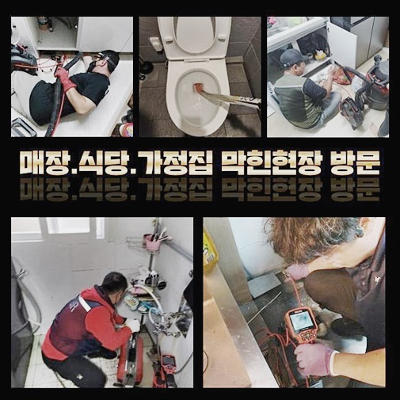
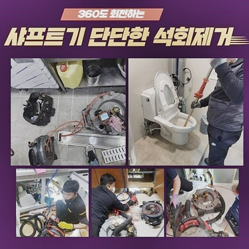
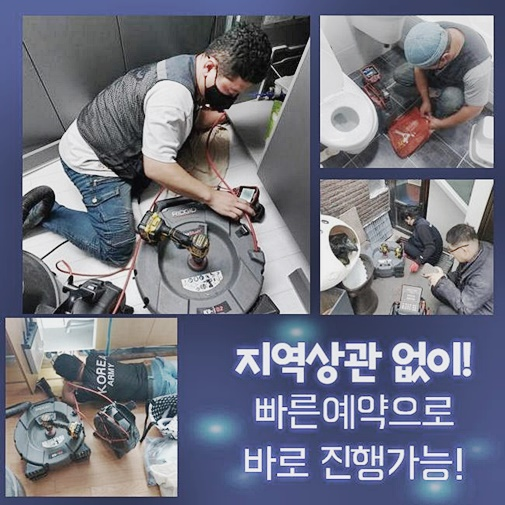
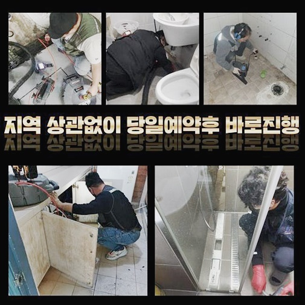
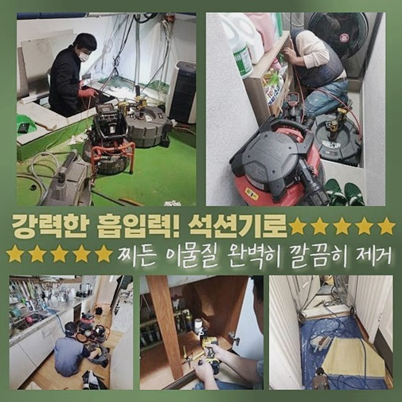
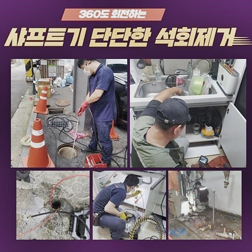

🏠 영등포 신길동세탁실막힘 대림동 배수구뚫기 배관막힘
용인시 처인구 배관막힘 전문 시공 후기

📋 작업 개요
- 위치: 용인시 처인구, 수원시 영통구, 화성시 동탄
- 서비스 유형: 배관막힘, 하수구청소, 고압세척, 내시경점검
- 작업 일시:
- 업체명: 하수구수사대 (010-5615-2118)
🔍 문제 상황
영등포 신길동세탁실막힘 대림동 배수구뚫기 배관막힘
이번달에도 의뢰자님들께서 싱크대의 배관이 막혔을때 불러주시는데요
얼마전 종합적인 이유의 애로사항으로 불편함을 느끼셨던 한 가족의 현장을 공유해드릴게요
의뢰자분께서 아파트 발코니 안쪽에 오수가 넘쳐 흐르지않아 연락해주셨어요
빨래를 하려고 사용하게 될때마다 물들이 역류하면서 넘친다고 하셨습니다
하수구를 막는 이유를 관찰한 뒤에 의뢰자님의 불편사항을 즉시 없애주기 위해 신속히 자택으로 방문을 드렸습니다
자택에 방문하여 발코니 위치의 문제점들을 확인해 보았더니
연락을 통해 말해주신 것처럼 세탁실에 위치한 하수구에 이물질로 가득해 역행되는 일이 발생되고있는 상황이였어요
입구 쪽으로 밖으로 나온 잔해들도 흐르고 있는것을 확인되었어요
하수관을 뚫어내는 기기인 석션기기를 가용시켜 막혀있는곳을 흡입하는 방식으로 빼냈습니다
발코니 위치의 배관에 빠져나오지 못한 찌꺼기도 함께 제거를 진행하였죠
어쩌다 한번씩가다 단조로운 막힘정도는 꾸준히 석션기계 만으로 문제들이 제거될수 있어요

🔎 원인 분석
💡 전문가 진단: 정밀 진단 장비를 사용하여 슬러지의 고착 여부를 판명하고 타격/세척 작업을 실시했습니다.
누회 석션 작업 후 청수를 소량으로 흐르게해 배수검열을 진행하니
잠깐동안은 하수가 흘러서 내려가는듯 하더니 곧바로 하수가 가득 찼습니다
이번에는 간단한 막힘이 아니였는데요
하수구가 막혀버린 곳을 볼수있는 전문기계인 내시경기기를 사용해서 물막힘이 발생한 근본원인을 관찰하였어요
내시경기기는 얇고 길게 생긴 폐기물의 끝부분에 카메라가 있는 장치로 쉽게 생각하면 건강검진시에 사용되는 대장내시경장치와 흡사한 기계로서
직접적으로 체크하기 어려운 배수관의 내부 증상을 점검할 수 있어요
내시경장비를 가용시켜 배관 속을 체크해보니 디스플레이에 이물질과 기름때 등등 막혀있는 형상이 확인할수 있었습니다
물이 흐르는 곳까지 좁아진 상태로 있었지만 문제가 되는 만큼은 아니였어요
내시경으로 깊은 속안까지 투입시켜 주름져 있는 배관내부 안쪽까지도 체크해보았습니다
주방 싱크볼의 관로와 직결된 위치에서 큰 덩어리가 탐지되었습니다
싱크볼에서 배관을 연결할때 꾸준히 사용되는 주름관에서 부서진 조각들이 깊숙한 곳까지 들어가 있는걸 봤습니다
배수구 망을 뚫을수있는 정도는 아니었지만 주방싱크를 시공하면서 폐조각들을 저희가 직접 처리하지않고 버려 버린것 같았어요

🔧 작업 과정
이러한 부스러기와 잔해들이 부딪치는 일이 발생하면서 관내 압력이 향상되어 배관의 내부까지 충격을 생기게해 부서지는 현상이 발생될 수 있는것으로 볼수있어요
거실 세탁실과 주방싱크와 연결돼있어 흡착물 들로 배관내부 까지 가로막혀서 양측에서 물을 쓸때마다 역으로 분출되는 일이 생기게되요
샤프트장치를 이용하여 거실의 발코니와 배관 청소작업을 하였습니다
샤프트기는 모터랑 체인이 붙어있는 스케일링 기계로서 모터의 전원장치를 작동시킬 경우 끝에 달려있는 헤드체인노커가 회전하며 돌아가는 도구입니다
노커 라는 명칭으로 불려지는 쇠사슬들의 돌아가는 힘으로 가로막힌 위치를 걷어내서 배수관의 세척이 가능한 부분입니다
샤프트장치 사용을 수행하며 동시에 내시경기기를 함께 가용시켜 잔해물이 축적된 곳들 중점으로 목표설정하고 청소하였습니다
사이사이 물들을 흘려보내주며 잔해물 제거를 하였습니다
부스러진 오물과 남겨진 기름들은 석션장비를 가용시켜 빨아들여 빼냈습니다
해결을 하는 중간에 고객분께서는 싱크대 조각이 어쩌다 배수관 안에 들어간건지 알수없다하시며 얘기해주셨어요
그전에 리모델링 작업중 작업하는 사람들의 잘못으로 이런 결함이 발생했을 이유가 있다고 설명하니 당황하셨어요
우리들은 고객님들께 생각지 못하였던 이물이 하수가 막힌부분의 원인이 발생되는 사안을 설명을 하며 꾸준히 생기게되는 상황이라고 안내하였습니다
또 우리들은 동일한 작업을 하면서 이상상황을 늘 해결했다고 강조하며 안내했어요
싱크대의 배관위치의 막힘이 생긴곳의 싱크의 배관조각을 꺼내보니 폐기물의 크기가 길기도해 하수관을 막아버릴수 있다고 보았습니다
여러가지 잔해물들로 인해서 배관이 막히는 일이 발생되며 세탁실의 세탁기와 싱크볼에 있는 배관들이 이어져있으므로 두곳에서 동시에 물을 사용하면 제기능을 하지못해 역행되는 증상들이 발현된것으로 확인되었습니다
해결이 되니 의뢰자님께서도 안도할 수 있다고 말씀하시더라구요
싱크대의 하수관들을 해결한뒤 배관에서 꺼낸 이물질의 양들이 예상했던것보다 많았었어요
저희의 경우 잔해물들은 채망으로 걸러서 물은 변기통에 버리며 남은 잔해물들은 폐기물 봉지에 흔적없게끔 치워드렸어요
문제가 있었던 작업 또한 정리한뒤 주방싱크를 관찰했습니다
거실 세탁실 또한 배수흐름 검사를 확인하니 배수가 답답한 기색없이 배출되는 것까지 확인되었어요


✅ 작업 완료
기존에 있었던 오수역류현상도 보여지지 않는것을 빈틈없이 확인을 하고나서 작업을 진행한곳을 뒷마무리하고 장비들을 가지고 복귀를 하였습니다
어느날 배수관에서 하수가 정상적인 모습으로 안빠지는 증상이 생기거나 흐름을 거스르는 등 증세가 생겼을 때에는 곧장 전문기술을 가진자에게 요청 주시는게 가장 좋은 방법이에요
상황에 맞춰 적합한 수리와 조치로 이상사태를 해결할 수 있기 때문입니다
저희업체는 고객님들이 시간낭비 하지않게 일반적인 삶을 보내기위해 하루빨리 빈틈없이 이상사태를 시정해 드립니다
언제라도 의뢰 해주시면 친절하며 정확한 해결책을 제공해 드릴게요 최선을 다하겠습니다



⚠️ 하수구 배관 막힘 예방 및 관리 가이드
- ✅ 머리카락, 비닐, 물티슈 등 물에 분해되지 않는 이물질은 절대 흘려보내지 마세요.
- ✅ 기름기 많은 식기는 설거지 전 키친타올로 먼저 기름때를 닦아내세요.
- ✅ 주기적으로 배수구에 뜨거운 물을 가득 부어주어 유지방 고착을 방지하세요.
- ✅ 작업 후 1년 이내 재발 시 무상 A/S 보증 서비스를 제공합니다.
💡 핵심 정리
- 확실한 장비 작업(내시경 점검 및 샤프트 스케일링)으로 원인을 뿌리 뽑습니다.
- 작업 후 1년 이내에 동일한 부위 재발 시 100% 무상 A/S 서비스를 보장합니다.
- 서울 · 경기 · 인천 전 지역에 24시간 언제든 긴급 출동할 수 있도록 항시 대기 중입니다.
❓ 자주 묻는 질문 (FAQ)
🚨 용인시 처인구 배관막힘 문제로 고민이신가요?
정확한 원인 진단과 확실한 시공으로 재발 없는 해결을 약속드립니다.
24시간 긴급 출동 | 서울 · 경기 · 인천 전지역 | 1년 내 재발 시 무상 A/S